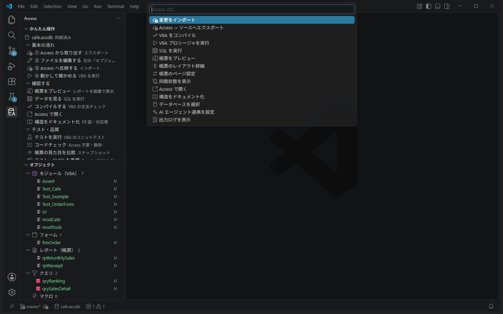
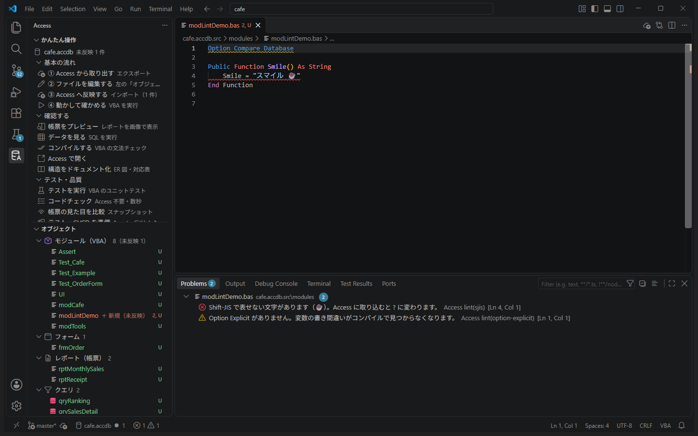

リファレンス
ボタン・コマンド・設定・ファイルの書き方・エラーなどの一覧です。Ctrl+F で探してください。使い方を順に覚えたいときはチュートリアル、考え方を学ぶときは学習コースへ。
エディタ・ステータスバー
ファイルの上に出るボタン（CodeLens）
| ファイル | ボタン |
|---|---|
| 標準モジュール（modules/*.bas） | 各 Public Function / Sub の上に「▶ Access で実行」。引数があれば入力欄が出る |
| クエリ（queries/*.sql） | 先頭に「▶ 保存済みクエリを実行」「▶ この SQL を実行」 |
| レポート・フォーム（reports/*.txt, forms/*.txt） | 先頭に「プレビュー」「レイアウト詳細」「ページ設定」（レポートのみ） |
VBA の編集支援
標準モジュール・クラスモジュール・フォーム／レポートのコード（CodeBehindForm 以降）で使えます。日本語の名前にも対応しています。
| 機能 | 操作 | 内容 |
|---|---|---|
| アウトライン | エクスプローラーの「アウトライン」／ Ctrl+Shift+O | ファイル内の Sub・Function・Property・定数・変数・Type・Enum の一覧。画面上部のパンくずにも表示 |
| プロジェクト全体の検索 | Ctrl+T | 全モジュールの手続き・定数を名前で探して移動 |
| 定義へ移動 | F12 または Ctrl+クリック | 手続き（別モジュール・モジュール名.手続き名 も）、モジュール名、手続き内のローカル変数・引数の宣言へ |
| 参照の検索 | Shift+F12 | その名前が使われている場所の一覧（コメントと文字列の中は除く。フォーム・レポートのコントロールソースなどの式も含む） |
| 説明の表示 | マウスを乗せる | 手続きの宣言と、直前のコメント（説明）を表示。Nz・DLookup・Format などよく使う関数の説明も |
| 入力補完 | 入力中に自動／ Ctrl+Space | プロジェクトの手続き・定数・モジュール名、手続き内の変数と引数、よく使う関数、キーワード。モジュール名. の後はそのモジュールの Public な手続き |
| 引数のヒント | ( や , を入力したとき | 呼び出している手続きの引数の一覧と、今入力している引数 |
| 折りたたみ | 行番号の横の ˅ | 手続き・Type・Enum ごと。フォーム／レポートのテキストは Begin〜End ごと |
| 整形 | Shift+Alt+F（右クリック →「ドキュメントのフォーマット」） | インデントと行末の空白だけを整える（ブロックごとに 1 段。Case はもう 1 段。ラベルは行頭）。End If の書き忘れなどでブロックの対応が取れないときは何も変えない。保存時に整形したいときは設定 "[vba]": { "editor.formatOnSave": true } |
| 名前の変更 | F2 | ローカル変数・引数（その手続きの中）と、モジュール内の Private な名前（そのモジュールの中）を一括で変更。コメント・文字列・obj.名前・rs!名前 は変えない。Public な名前、_ を含む手続き（イベントの可能性）、フォームの式からも使われている名前は対象外 |
| スニペット | 下の表の文字を入力して Tab | よく使う書き方のひな形 |
| 入力 | できるもの | 入力 | できるもの |
|---|---|---|---|
func | Public Function（説明コメント付き） | errh | エラー処理付きの Sub |
sub / psub | Public Sub / Private Sub | rs | DAO レコードセットのループ |
prop | Property Get / Let | exec | CurrentDb.Execute（dbFailOnError） |
if / ife | If / If～Else | dlookup | Nz(DLookup(...), 既定値) |
for / foreach | For / For Each | test | テスト（Public Sub Test_○○） |
dowhile / select / with | Do While / Select Case / With | testsetup / module | TestSetup・TestTeardown / モジュールの先頭 |
波線とパネル
| 表示 | 出どころ |
|---|---|
| 赤い波線（反映・実行の後） | コンパイル エラー／実行時エラー（「問題」パネルの出どころ：Access） |
| 赤／黄の波線（保存の後） | コードチェック（出どころ：Access lint） |
| 「テスト」ビュー（フラスコ） | テストの ✔ / ✘。失敗した行にも表示 |
| 「出力」パネル → Access VSC | すべての操作の詳しい結果（JSON） |
そのほか
- ステータスバー（画面の一番下）：データベース名と未反映の数（● N）。押すとメニュー

ステータスバーを押すと出るメニュー - エディタ右上：ソースフォルダ内のファイルを開いているとき「反映する」、レポートでは「プレビュー」
- エクスプローラーの右クリック：.accdb →「データベースを選択」、ソース内のファイル →「このファイルを Access へ反映」、レポート →「プレビュー」
- 色分け：.bas / .cls は VBA、forms / reports / macros の .txt は Access のオブジェクト（CodeBehindForm 以降は VBA）として色分け
コマンド一覧
Ctrl+Shift+P で「Access:」と入力すると表示されます。
| コマンド | 内容 |
|---|---|
| Access: メニュー | よく使う操作の一覧（ステータスバーを押したときと同じ） |
| Access: データベースを選択 | 使う .accdb / .mdb を選ぶ |
| Access: Access から取り出す（エクスポート） | Access → ファイル |
| Access: Access へ反映する（変更をインポート） | 変更したファイル → Access ＋ コンパイル |
| Access: すべて Access へ反映する | 全ファイル → Access |
| Access: このファイルを Access へ反映 | 開いているファイル（選んだファイル）だけ反映 |
| Access: VBA をコンパイル | コンパイルだけ |
| Access: VBA プロシージャを実行 | 名前と引数を入力して実行 |
| Access: SQL を実行（データを見る） | SELECT の結果を表で表示 |
| Access: プレビュー（帳票の印刷イメージ） | レポート／フォームを画像で表示 |
| Access: レイアウト詳細 | 全項目の位置・大きさ（cm）、用紙設定、問題点 |
| Access: ページ設定（用紙・向き・余白） | 用紙サイズ・向き・余白（mm）を変更 |
| Access: 同期状態を表示 | 未反映・追加・削除のファイル一覧 |
| Access: Access で開く | Access の画面で開く |
| Access: AI エージェント連携を設定（.mcp.json / CLAUDE.md など） | AI 用の設定を作る |
| Access: 出力ログを表示 | 出力パネル |
| Access: 最新の状態に更新 | サイドバーなどを更新 |
| Access: テストを実行（VBA ユニットテスト） | テストをすべて実行 |
| Access: コードチェック（lint） | ソース全体をチェック |
| Access: 構造をドキュメント化（ER 図・対応表） | 取り出したソースから データベース名.docs/ に Markdown を作り、プレビューで開く（Access 不要） |
| Access: テスト・CI/CD を準備（Assert / GitHub Actions / コミット前チェック） | テストと CI の準備 |
| Access: 帳票の見た目を比較（スナップショット） | 基準画像と比較 |
| Access: この見た目を基準にする（スナップショット更新） | 今の見た目を基準画像にする |
| Access: 配布の設定（access-deploy.json） | 配布先などを設定 |
| Access: リリースを作成（.accde） | .accde を作る |
| Access: 配布する（共有フォルダへ公開） | 公開する |
| Access: 配布先を開く | 共有フォルダを開く |
| Access: ドキュメントを開く（チュートリアル・学習コース・リファレンス） | このドキュメント |
| Access: 練習用サンプルを作る | チュートリアル用のサンプル DB |
設定
サイドバー「その他」→「設定」、または［ファイル］→［ユーザー設定］→［設定］で「accessVsc」を検索。
| 設定 | 初期値 | 内容 |
|---|---|---|
accessVsc.database | （空） | 使うデータベース。空ならフォルダ内から自動で探す（1 つだけなら自動選択） |
accessVsc.sourceFolder | （空） | ソースフォルダ。空なら「データベース名.src」（例 shop.accdb.src） |
accessVsc.importOnSave | オフ | 保存したら自動で反映・コンパイル |
accessVsc.lintOnSave | オン | 保存したら自動でコードチェック |
accessVsc.keepAccessOpen | true | Access を裏で開いたままにして、2 回目以降の反映・実行・SQL などを速くする。オフにすると操作のたびに Access を起動・終了する |
accessVsc.keepAccessOpenSec | 300 | 使わない時間がこの秒数を超えたら、開いたままの Access を閉じる |
accessVsc.timeoutSec | 0 | Access の操作を打ち切る秒数。0 なら操作ごとの既定（実行 60 秒、取り出し・反映 600 秒、テスト 900 秒など） |
accessVsc.sqlRowLimit | 200 | 「データを見る」の最大行数 |
accessVsc.powershellPath | powershell.exe | 通常は変更不要（Windows PowerShell 5.1 を推奨） |
キーボード
| キー | 動き |
|---|---|
| Ctrl+Shift+P | コマンド パレット（「Access:」で絞り込み） |
| Ctrl+P | ファイルを名前で開く |
| Ctrl+S | 保存（コードチェックが動く） |
| Ctrl+F / Ctrl+H | ファイル内の検索 / 置換 |
| Ctrl+Shift+F / Ctrl+Shift+H | 全ファイルの検索 / 置換 |
| Ctrl+G | 行番号へ移動 |
| Ctrl+D | 同じ単語を次々に選ぶ（まとめて編集） |
| Ctrl+Shift+M | 問題パネル（エラー・警告の一覧） |
| Ctrl+\ | エディタを左右に分割 |
| F12 / Shift+F12 | 定義へ移動 / 使われている場所の一覧 |
| F2 / Shift+Alt+F | 名前の変更 / 整形（インデントを整える） |
| Ctrl+Shift+O / Ctrl+T | ファイル内の手続きへ移動 / プロジェクト全体の手続きへ移動 |
| Alt+← | 移動する前の場所へ戻る |
フォルダの構成
C:\work\shop\
shop.accdb データベース本体
shop.accdb.src\ ソースフォルダ（git で管理する）
shop.accdb.docs\ 構造のドキュメント（「構造をドキュメント化」で作る。git で管理してよい）
modules\ *.bas *.cls 標準モジュール / クラスモジュール
forms\ *.txt フォーム
reports\ *.txt レポート
macros\ *.txt マクロ
queries\ *.sql クエリ
tables\ *.json テーブル定義（見るだけ）
relationships.json リレーションシップ（見るだけ）
references.json VBA の参照設定（見るだけ。参照不可はコードチェックで警告）
snapshots\ *.png 帳票の基準画像
.accessvsc.json 同期の記録（編集しない）
.accessvsc\ 作業用（git では管理しない）
backups\ 反映・ページ設定前の自動バックアップ（最新 10 個）
preview\ プレビューの PDF・画像
test\ test-results\ テスト用コピー・結果（junit.xml）
snapshots\current\ diff\ 比較したときの今の画像・差分画像
build\ リリース作成の作業場所
dist\ 作成したリリース（*.accde と *.json）
access-deploy.json 配布の設定
tools\access-vsc\ CI 用のスクリプト（テスト・CI/CD の準備で作成）
.github\workflows\ access-ci.yml / access-release.yml
.githooks\pre-commit コミット前のコードチェックオブジェクト名にファイル名で使えない文字（\ / : * ? " < > | %）があると %XX に置き換わります（例：売上? → 売上%3F.txt）。
ファイルの書き方
| ファイル | 書き方 | 注意 |
|---|---|---|
標準モジュール .bas | 普通の VBA。ファイル名がモジュール名 | VBE で書き出した Attribute VB_Name 行があっても可 |
クラスモジュール .cls | 先頭に Attribute VB_... の 4 行、続けて VBA | VBE 形式（VERSION 1.0 CLASS から始まる）も可。.bas ⇔ .cls を変えると作り直される |
フォーム・レポート .txt | Access の SaveAsText 形式。Begin 種類 … End が 1 つの項目。CodeBehindForm 以降が VBA | PrtMip・PrtDevMode などのバイナリ行は編集しない。LayoutCached* は無視してよい |
マクロ .txt | SaveAsText 形式 | — |
クエリ .sql | Access の SQL を 1 つ | パススルークエリは先頭に -- accessvsc: {...}（接続情報）。パスワードは *** に伏せられ、反映時は既存の接続を維持 |
テーブル .json | 項目名・型・サイズ・必須・既定値・説明・インデックス・リンク先 | 見るだけ。変更は Access の画面か DDL（ALTER TABLE など）で |
references.json | VBA の参照設定（名前・GUID・版・ファイルの場所・組み込みか・参照不可か） | 見るだけ。変更は Access の［ツール］→［参照設定］で行い、取り出し直す |
? に化けます（コードチェックで検出）。帳票の単位と用紙
1 cm = 567 twip、1 mm ≒ 56.7 twip、1 インチ = 1440 twip。
| cm | 0.5 | 1 | 2 | 3 | 5 | 10 | 15 | 19 |
|---|---|---|---|---|---|---|---|---|
| twip | 284 | 567 | 1134 | 1701 | 2835 | 5670 | 8505 | 10773 |
用紙と印刷可能幅
印刷可能幅 = 用紙の幅 − 左余白 − 右余白。帳票の幅（Begin Report 直下の Width）がこれを超えると白紙ページが出ます。
| 用紙 | 縦の幅 | 横の幅 | 縦・余白左右 10 mm の印刷可能幅 |
|---|---|---|---|
| A4 | 21.0 cm | 29.7 cm | 19.0 cm（10,772 twip） |
| A3 | 29.7 cm | 42.0 cm | 27.7 cm（15,704 twip） |
| B4 | 25.7 cm | 36.4 cm | 23.7 cm（13,436 twip） |
| B5 | 18.2 cm | 25.7 cm | 16.2 cm（9,185 twip） |
| A5 | 14.8 cm | 21.0 cm | 12.8 cm（7,257 twip） |
| Letter | 21.6 cm | 27.9 cm | 19.6 cm（11,106 twip） |
| Legal | 21.6 cm | 35.6 cm | 19.6 cm（11,106 twip） |
プレビューで表示される問題
| 表示 | 意味 |
|---|---|
| ○○ と △△ が重なっています | 同じセクションで 2 つの項目が重なっている（線・四角・画像は除く） |
| 右端が幅を超えています | 項目が帳票の幅からはみ出している |
| 下端がセクションの高さを超えています | 項目がセクションの下にはみ出している |
| レポート幅が印刷可能幅を超えています | 用紙に収まらない（白紙ページの原因） |
| 位置がマイナスです | Left か Top がマイナス |
Assert（テストの確かめ方）
失敗すると、エラー番号 vbObjectError + 9001・Source "Assert" のエラーを発生させ、テストは「失敗」になります。最後の引数 message は省略可（失敗時に表示）。
| 書き方 | 確かめること |
|---|---|
Assert.AreEqual 期待値, 実際 [, message] | 等しい。文字列と数値は別物として扱う（"1" と 1 は違う）。Null 同士は等しい |
Assert.AreNotEqual 値, 実際 [, message] | 等しくない |
Assert.AreClose 期待値, 実際 [, 誤差] [, message] | 小数が誤差以内で等しい（誤差の既定は 0.000001） |
Assert.IsTrue 条件 / Assert.IsFalse 条件 | True / False |
Assert.IsNullValue 値 / Assert.IsNotNullValue 値 | Null である / ない |
Assert.IsNothing obj / Assert.IsNotNothing obj | Nothing である / ない |
Assert.Contains 文字列, 部分 | 部分が含まれる（大文字小文字を区別） |
Assert.Fail [理由] | その場で失敗 |
UI（フォームを操作するテスト）
modules/UI.bas（「テスト・CI/CD を準備」で、フォームがある DB に追加される）。キーボードで操作したのと同じように動かすので、更新前・更新後処理やクリックのイベントも実際に動きます。テストの間、Access は画面の外に表示されます（タスクバーに出ます）。
| 書き方 | すること |
|---|---|
UI.OpenForm "フォーム名" [, "条件"] | フォームを開き、以降の操作の対象にする（条件は "ID=3" のような絞り込み） |
UI.TypeText "コントロール名", "文字" [, commit] | 今の内容を置き換えて入力し、Tab で確定（commit を False にすると確定しない）。コンボボックスは表示されている文字で選べる |
UI.Click "コントロール名" | ボタンを押す。チェックボックス・トグルボタンは切り替わる |
UI.PressKey UI_KEY_ENTER | キーを押す（UI_KEY_TAB・UI_KEY_ESCAPE・UI_KEY_DOWN など） |
UI.Focus "コントロール名" | フォーカスを移す（移動前のコントロールの更新後処理が動く） |
UI.Value("コントロール名") | コントロールの値 |
UI.Form | 開いているフォーム（UI.Form.lblPick.Caption のように使う） |
UI.UseForm "フォーム名" | 操作の対象を切り替える（ボタンで別のフォームが開いたとき） |
UI.IsOpen("フォーム名") | 開いているか |
UI.CloseForm ["フォーム名"] | 閉じる（TestTeardown で呼ぶと、失敗したテストの後も確実に閉じる） |
- 値を
Forms!frm!txt = 1のように直接入れると、イベントは動かない。画面の動きを確かめるときはUI.TypeTextを使う - ボタンで出た MsgBox は自動で答える（確認の質問は「キャンセル」／「いいえ」）。InputBox や
acDialogのフォームは止まるので開かない - ドラッグや右クリックメニューなど、画面上の位置に頼る操作はできない
テストの決まり
- テスト = 標準モジュール（
modules/*.bas）にある、名前がTest_で始まる引数なしの Public Sub / Function - 同じモジュールの
Public Sub TestSetup()/TestTeardown()は、各テストの前 / 後に呼ばれる - テストは
.accessvsc\test\に作ったデータベースのコピーで実行される（リンクテーブルの先は本物） - 実行されるのは反映済みの内容（未反映の変更があると注意が出る）
- 結果：成功（✔）／失敗（Assert が満たされない）／エラー（実行時エラー。エラーの行も表示）
- JUnit 形式の結果：
.accessvsc\test-results\junit.xml - テスト中の MsgBox は自動で答える（OK だけなら OK、確認の質問は「キャンセル」／「いいえ」）。InputBox・モーダルフォームは時間切れの原因になる
コードチェックの項目
Access を使わずにソースフォルダを調べます（保存時・コミット前・CI）。
| 項目 | 重さ | 内容 |
|---|---|---|
sjis | エラー | Shift-JIS で表せない文字（Access に入れると ? になる） |
empty-sql | エラー | クエリの SQL が空 |
option-explicit | 警告 | Option Explicit がない（モジュール・フォーム／レポートのコード） |
stop-statement | 警告 | Stop 文が残っている |
layout-width | 警告 | 帳票・フォームの項目の右端が幅を超えている |
layout-section | 警告 | 項目の下端がセクションの高さを超えている |
readonly-edited | 警告 | 見るだけのファイル（テーブル定義・参照設定など）が編集されている |
implicit-variant | 警告 | 変数・引数の型（As ...）が書かれていない（暗黙の Variant）。Dim a, b As Long の a も対象 |
unused-variable | 警告 | 手続きの中で宣言したのに使っていない変数 |
broken-reference | 警告 | VBA の参照設定が「参照不可」（references.json）。コンパイルできない原因になる |
block-structure | 警告 | If / For / Do / With / Select Case / Sub などのブロックの対応が取れない（End If などの書き忘れ） |
format | 情報 | インデントが整っていない。整形（Shift+Alt+F または CLI の format）で直せる |
implicit-variant-return | 情報 | Function / Property Get の戻り値の型が書かれていない |
エラーがあるとコミット前チェックと CI が失敗します。警告は失敗にはなりません。

帳票スナップショット
- 基準画像：
<ソースフォルダ>\snapshots\<レポート名>_p<ページ>.png（git にコミットする） - 状態：同じ／変化あり（差分画像あり）／基準なし／基準を更新／エラー（例：データがなく帳票が開けない）
- 比べ方：ピクセルごとに比べ、色の差が 32 以下なら同じとみなす。違うピクセルが 1 つでもあれば「変化あり」（CLI の
-Thresholdで許容する割合 % を指定できる） - ページ数が変わると「ページ追加」「ページ削除」
- 比べるのは 1 帳票あたり最初の 5 ページ（CLI の
-Pagesで変更）
CI/CD のファイル
| ファイル | 作られるとき | 内容 |
|---|---|---|
.github/workflows/access-ci.yml | テスト・CI/CD を準備 | push・プルリクエストで実行。lint（クラウド）→ test（ラベル access のセルフホストランナー：全取り込み・テスト・帳票比較・成果物の保存） |
.github/workflows/access-release.yml | 配布の設定 | タグ v* の push または手動実行で、取り込み → テスト → リリース作成 → 配布 |
.githooks/pre-commit | テスト・CI/CD を準備 | コミット前にコードチェック。エラーがあると止める（git commit --no-verify で回避可） |
tools/access-vsc/ | テスト・CI/CD を準備（毎回更新） | CI とフックが使うスクリプト一式 |
modules/Assert.bas, UI.bas, Test_Example.bas | テスト・CI/CD を準備（無い場合のみ） | アサーションとテストの例 |
.gitattributes / .gitignore | テスト・CI/CD を準備（足りない行だけ追記） | ソースは CRLF、DB はバイナリ、.accessvsc/ などは除外 |
配布
access-deploy.json
| 項目 | 既定 | 内容 |
|---|---|---|
appName | DB 名 | アプリ名（配布ファイル名・利用者 PC のフォルダ名） |
output | dist | リリースの出力先 |
deployTo | — | 配布先の共有フォルダ |
backend.path | — | リリース時に張り替える本番のバックエンド DB（省略で張り替えない） |
backend.from | — | （任意）このファイル名のバックエンドへのリンクだけ張り替える |
keepReleases | 10 | 共有フォルダに残す過去の版の数 |
リリースを作成（build）
- DB を
.accessvsc\build\にコピー - DB プロパティ
AppVersion・AppBuiltAtを書き込み - Access のリンクテーブル（
DATABASE=のもの）をbackend.pathに張り替えて RefreshLink - コンパイル
.accdeを作成（Access のウィンドウが一瞬、最小化で表示される）dist\<アプリ名>_<版>.accdeと.json（SHA-256・作成日時・コミット・張り替え結果）
配布する（deploy）後の共有フォルダ
\\server\share\Shop\
Start-Shop.cmd 利用者が起動する
launcher.ps1 起動時に版を確認して、新しければ %LOCALAPPDATA%\AccessApps\Shop にコピーして開く
version.json appName / version / file / sha256 / publishedAt / publishedBy
app\Shop.accde 現在の版
releases\1.2.0\ 過去の版（keepReleases 個まで）- ランチャーはダウンロードしたファイルの SHA-256 を確かめる。古い版を使用中なら「閉じてから起動し直して」と表示
- 前の版に戻す：「配布する」で
distの前の版を選ぶ（CLI はdeploy -Yes -From） - .accde は作成した Access と同じビット数の Office でしか動かない
- ランチャーは「信頼できる場所」を登録しない（必要なら管理者が設定）
エラーと対処
| 表示 | 原因 | 対処 |
|---|---|---|
| データベースが Access などで開かれています | 同じ DB を Access で開いている | Access を閉じて、もう一度 |
| コンパイル エラー: …（○○ の N 行目） | VBA の書き間違い | 赤い波線の行を直して反映 |
| 実行時エラー 'N': … | 実行中のエラー（0 除算・型・Null など） | 赤い波線の行を確認して直す |
| 時間内に終わらなかったため、Access を終了しました | InputBox・モーダルフォームの入力待ち、無限ループ、重い処理 | 入力待ちをなくす／設定の Timeout Sec を延ばす |
| Access が正しく終了しなかったため、強制終了しました | Access の終了処理が止まった（処理自体は完了） | もう一度実行。続くなら Access の更新を確認 |
| N 件のファイルを取り込めませんでした | SQL の文法、フォームのテキストの書き間違いなど | 表示されたファイルと理由を確認して直す |
| この SQL はデータを書き換えるため、ここでは実行できません | 「データを見る」は読み取り専用 | 更新は Access の画面か、CLI の sql -Write で |
| 未インポートの変更が N 件あります（取り出すとき） | ファイル側に未反映の変更がある | ［先にインポートする］か［上書きしてエクスポート］ |
| 使うデータベースが決まっていません | フォルダに .accdb がない／複数ある | 「データベースを選択」 |
| Shift-JIS で表せない文字があります | 絵文字など | 別の文字に置き換える |
| テストが見つかりません | 名前・引数・Private・.cls | 標準モジュールに Public Sub Test_○○() |
| Unimported source changes are NOT included in this test run | 未反映の変更がある状態でテスト | 反映してからテスト |
| 帳票の比較が毎回「変化あり」 | 日付など毎回変わる内容を印刷 | -Threshold 0.1 など |
| .accde を開くとセキュリティの警告 | 信頼できる場所でない | 管理者に「信頼できる場所」の登録を依頼 |
| コミットできない | コミット前チェックでエラー | 表示されたエラーを直す |
| Access アイコンが出ない | インストール後に再読み込みしていない | Reload Window |
原因がわからないときは「その他」→「ログを表示」で、操作ごとの詳しい結果（JSON）を確認できます。
動作環境と制限
- Windows 10 / 11、Microsoft Access（Microsoft 365 または 2016 以降。Access Runtime のみは不可）、VS Code 1.101 以降、Windows PowerShell 5.1
- 最初の操作は Access の起動を待つ（2 秒ほど）。2 回目以降は裏で開いたままの Access を使う（1 秒以内）。テスト・帳票スナップショット・ビルドは、これまでどおり別の Access で動く
- 開いたままの Access は、使わない時間が
accessVsc.keepAccessOpenSec（既定 300 秒）を超えると閉じる。「Access で開く」の前・別のプロセス（AI の MCP サーバーなど）が同じ DB に書き込むときも、自動で閉じる - 開いたままの間、VBA のモジュール変数は次の実行まで残る（反映すると消える）
- AutoExec マクロ・スタートアップ フォームは操作のたびに動く
- VBA は Shift-JIS（絵文字など不可）
- MsgBox は自動で答える：OK だけの通知は OK、確認の質問（はい／いいえ、OK／キャンセル）は安全側の「キャンセル」→「いいえ」。InputBox・モーダルフォームは時間切れ
- 書き込み系（反映・コンパイル・ページ設定・更新 SQL）は、DB を Access で開いていると実行できない
- 反映・ページ設定・更新 SQL の前に自動バックアップ（
.accessvsc\backups、最新 10 個） - パススルークエリなどの接続文字列のパスワードは、取り出したファイルでは
***
セキュリティ
- 信頼できる DB・フォルダだけで使う。操作のたびに DB を開くため、AutoExec や VBA が動く。VS Code の信頼されていないワークスペース（制限モード）では無効
- AI に VBA・SQL を実行させるツール（
access_run・access_eval・access_sqlの write）は、自動承認にしないのがおすすめ。読み取り専用のツールにはreadOnlyHint、書き換えるツールにはdestructiveHintを付けている - ダイアログには安全側で答える（確認の質問は「キャンセル」／「いいえ」）
- 書き込みの前に自動でバックアップを取る。終了させるのは自分が起動した Access だけ
- 読み取りだけの操作（実行・SQL の参照・プレビュー・取り出し）では DB に保存しない
- UI テストのキー入力は、テスト用に起動した Access のウィンドウにだけ送る
- AI 連携の設定ファイル（
.mcp.json・CLAUDE.mdなど）には、ユーザー名を含む PC 固有のパスを書かない（DB がプロジェクトの外にあるときだけ、その絶対パス）。MCP サーバーはプロジェクトのフォルダで起動される前提。既存の設定ファイルが JSON として読めないときは上書きしない - CI テンプレートの test ジョブは、フォークからの PR では動かない。権限は
contents: read。公開リポジトリでは、外部コントリビューターのワークフローに承認を必須にする設定も推奨 - ランチャーは共有フォルダ内のファイルだけを使い、SHA-256 が一致しないファイルは起動しない
構造のドキュメント
「構造をドキュメント化」（CLI は document、AI は access_document）で、取り出したソースから データベース名.docs/ に Markdown を作ります。Access は使わないので、すぐに終わり、CI でも動きます。
| ファイル | 内容 |
|---|---|
index.md | 概要（数）、テーブルの関係（ER 図。Mermaid）、オブジェクト一覧と使われているところ |
tables.md | 項目・型・サイズ・必須・主キー／外部キー・インデックス・参照関係・件数・リンクテーブルか |
queries.md | 種類（選択・更新系・クロス集計）、元にしているもの、SQL |
forms.md | 元データ、コントロール（種類・セクション・コントロールソース・値集合ソース・イベント）、コードの手続きと「どのコントロールのどのイベントで動くか」 |
reports.md | 元データ、グループ（並べ替え・ヘッダー／フッター）、コントロール、コードの手続き |
modules.md | 手続きの一覧（宣言・直前のコメント＝説明）と、呼ばれているところ |
- 対応表：それぞれのオブジェクトに「使っているもの」「使われているところ」が出ます。改修の影響範囲を調べるときに使います。名前が出てくるかどうかで調べるため、コメントの中は数えず、コードで組み立てた名前（
"tbl" & xなど）は見つかりません。クエリやコントロールの式の中では、名前(の形だけを手続きの呼び出しと数えます - 説明欄：各オブジェクトの
<!-- notes:種類:名前 -->と<!-- /notes -->の間に書いた内容は、作り直しても残ります。AI に「説明欄を埋めて」と頼むこともできます（「構造をドキュメント化」の後に出る［AI への頼み方をコピー］） - ER 図は Mermaid で書いています。GitHub ではそのまま図になります。VS Code のプレビューで図にするには、Mermaid に対応した拡張機能（例：Markdown Preview Mermaid Support）を入れてください
AI 連携・MCP ツール
AI エージェント連携を設定 で作られるもの
| AI | ファイル | 内容 |
|---|---|---|
| Claude Code | .mcp.json | MCP サーバー access の登録（%LOCALAPPDATA%\access-vscode\bin\mcp-server.ps1） |
| Claude Code | CLAUDE.md | 作業手順・注意（<!-- access-vsc:begin --> から end までの部分を更新） |
| GitHub Copilot | .github/copilot-instructions.md | 同上（MCP サーバーは拡張機能が自動で登録） |
| Cursor | .cursor/mcp.json, .cursor/rules/access-vsc.mdc | MCP サーバーの登録と作業手順 |
| Gemini CLI | .gemini/settings.json, GEMINI.md | MCP サーバーの登録と作業手順 |
| Codex・その他 | AGENTS.md | 作業手順（MCP サーバーは各ツールの設定で登録） |
MCP ツール
| ツール | 内容 | 主な引数 |
|---|---|---|
access_status | 未反映の変更（Access 不要） | — |
access_list | オブジェクト一覧 | — |
access_export | 取り出す | force, kinds |
access_import | 反映＋コンパイル＋取り込みの確認（result.verify：オブジェクトと Public な手続きが DB にあるか） | files, all, deleteMissing, compile |
access_compile | コンパイル | — |
access_run | VBA 実行 | function, args |
access_eval | 式の評価 | expression |
access_sql | SQL（既定は読み取り専用） | sql, limit, write |
access_report_layout | 帳票のレイアウト・用紙・問題点 | report, objectType |
access_report_preview | 帳票の画像（AI に画像を返す） | report, where, pages |
access_report_pagesetup | 用紙・向き・余白・幅 | report, paperSize, orientation, marginTop…, widthCm |
access_test | テスト | filter |
access_lint | コードチェック | — |
access_format | VBA のインデントを整える（空白だけ変更） | files, check |
access_document | 構造のドキュメント（ER 図・対応表）を作る。結果に、未記入の説明欄の一覧 | out |
access_report_snapshot | 帳票の見た目の比較（差分画像を返す） | reports, update, threshold |
access_setup_ci | テスト・CI の準備 | root, gitInit, force |
access_build | リリース作成（配布はできない） | version |
すべてのツールで database（.accdb のパス）を指定できます（省略時はサーバー起動時の DB）。
コマンドライン（CLI）
VS Code を使わずに、ターミナル・バッチ・CI から同じ操作ができます。
$A = "$env:LOCALAPPDATA\access-vscode\bin\access.ps1"
powershell -NoProfile -ExecutionPolicy Bypass -File $A <コマンド> -DbPath .\shop.accdb [オプション]| コマンド | 内容 | オプション |
|---|---|---|
status | 未反映の変更（Access 不要） | — |
export | 取り出す | -Force（未反映を上書き）, -Kinds modules,queries |
import | 反映＋コンパイル＋取り込みの確認（result.verify：オブジェクトと Public な手続きが DB にあるか） | -Files modules/x.bas, -All, -DeleteMissing, -NoCompile |
compile | コンパイル | — |
run | VBA 実行 | -Function 名前, -ArgsJson "[1, 'abc']" または -Arg a,b |
eval | 式の評価 | -Expr "DCount('*','T1')" |
sql | SQL | -Sql "SELECT ...", -Limit 100, -Write |
list | オブジェクト一覧 | — |
layout | 帳票のレイアウト | -Report 名前, -ObjectType report|form |
preview | PDF・PNG | -Report, -Where "条件", -Pages 3 |
pagesetup | 用紙設定 | -PaperSize A4, -Orientation landscape, -Margins "10,10,15,15", -WidthCm |
test | テスト | -Filter "Test_Tax*", -JUnit 結果.xml, -Summary 概要.md, -NoLocate |
serve | 常駐して、1 行 1 リクエストの JSON（{"id":1,"command":"run","params":{"db":"…","function":"F"}}）を処理する。Access を開いたままにして使い回す（VS Code 拡張が使う） | 環境変数 ACCESSVSC_SESSION_IDLE（秒）・ACCESSVSC_SESSION=0（開いたままにしない） |
lint | コードチェック（Access・DB 不要） | -Src ソースフォルダ |
format | VBA のインデントを整える（Access・DB 不要） | -Files, -Check（確認だけ。整っていないファイルがあると失敗） |
document | 構造のドキュメント（Access・DB 不要） | -Out フォルダ（既定：データベース名.docs） |
snapshot | 帳票の見た目の比較 | -Reports "rpt*", -Update, -Threshold 0.1, -Tolerance 32, -Pages 5, -Summary |
setup-ci | テスト・CI の準備 | -Root, -GitInit, -Force |
deploy-init | 配布の設定 | -AppName, -DeployTo, -BackendPath, -Force |
build | リリース作成 | -Version 1.2.0, -Config |
deploy | 配布（-Yes がないと予行だけ） | -Yes, -Version, -From dist\x.accde |
共通のオプション
| オプション | 内容 |
|---|---|
-DbPath | データベース（省略時：今のフォルダに 1 つだけある .accdb、または環境変数 ACCESSVSC_DB） |
-Src | ソースフォルダ（省略時：<DB>.src、または ACCESSVSC_SRC） |
-Text | 人が読む形で出力（GitHub Actions 上では注釈も出す）。省略時は JSON |
-Compress | JSON を 1 行で出力 |
-TimeoutSec | 打ち切るまでの秒数 |
-NoBackup | 反映などの前のバックアップを取らない（CI 向け） |
-ParamsFile | パラメーターを JSON ファイルで渡す |
結果（JSON）
ok（成否）、command、database、source、result（コマンドごとの結果）、error、warnings、dialogs（自動で答えたダイアログ）、runtimeError（実行時エラーの場所）、backup、elapsedMs。失敗時の終了コードは 1。
用語集
- 取り出す（エクスポート）
- Access の中身をテキストファイルに書き出すこと。
- 反映する（インポート）
- テキストファイルの内容を Access に取り込むこと。続けてコンパイルする。
- 未反映
- ファイルを変えたが、まだ Access に取り込んでいない状態。
- ソースフォルダ
- 取り出したファイルが入るフォルダ（例 shop.accdb.src）。
- コンパイル
- VBA に文法・参照の間違いがないか確かめること。
- twip（トゥイップ）
- Access の帳票の長さの単位。1 cm = 567 twip。
- 印刷可能幅
- 用紙の幅から左右の余白を引いた幅。帳票の幅がこれを超えると白紙ページが出る。
- .accde
- コードを見たり変えたりできない、配布用の Access ファイル。
- フロントエンド / バックエンド
- 画面・プログラムの入った DB と、データだけが入った DB。
- リンクテーブル
- 別の DB のテーブルを、自分の DB から使えるようにつないだもの。
- テスト（ユニットテスト）
- 関数が正しい結果を返すかを自動で確かめる小さなプログラム。
- コードチェック（lint）
- 動かさずにソースを読んで、問題になりそうな所を見つけること。
- スナップショット / 基準画像
- 帳票の「正しい見た目」として保存した画像。
- git / コミット
- 変更履歴を記録する仕組み / その 1 回分の記録。
- CI / CD
- 変更のたびに自動でテストする仕組み / 自動で配布する仕組み。
- セルフホストランナー
- GitHub Actions の処理を、自分で用意した PC で動かす仕組み。Access が必要なテストに使う。
- MCP
- AI がアプリやツールを操作するための共通の仕組み。
- CodeLens
- エディタの行の上に出る小さなボタン（「▶ Access で実行」など）。